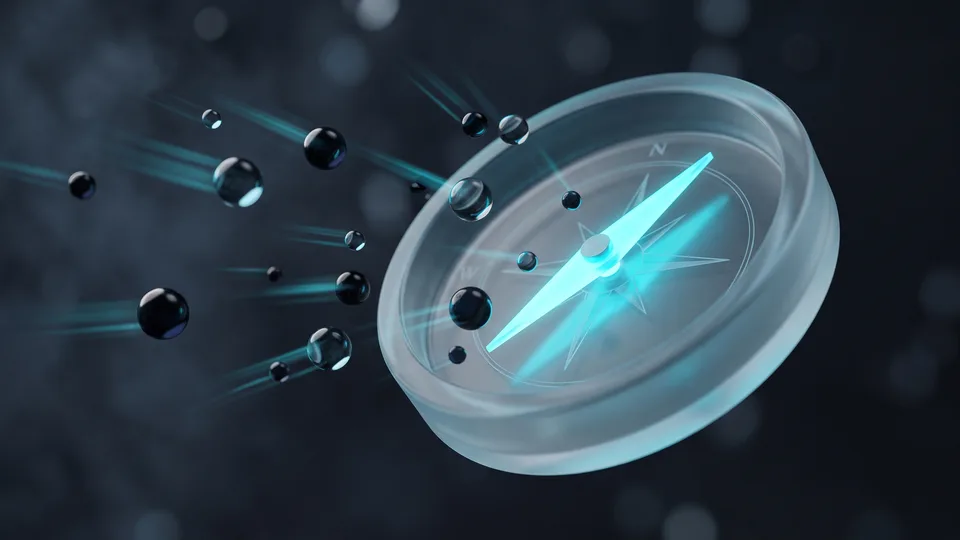

Sosyal Medya Stratejisi Nedir?
Sosyal medya stratejisi; hedef kitleyi, platform seçimini, içerik eksenini ve başarı ölçütlerini tek planda birleştiren yazılı karar çerçevesidir. İyi kurulmuş bir sosyal medya stratejisi hangi mecrada var olacağınızı ve orada neyi başarmak istediğinizi netleştirir. Yazılı bir plan sayesinde ekip aynı hedefe çalışır, üretim günlük kararlara savrulmaz.
Strateji kelimesi çoğu işletmede soyut kalır; pratikte beş sorunun yanıtıdır. Sorular şunlardır: Kime ulaşacağız, nerede olacağız, ne anlatacağız, ne sıklıkta üreteceğiz, başarıyı neyle ölçeceğiz? Bu yanıtlar yazıya dökülmediğinde hesap gündelik akışa teslim olur. Strateji kurmadan içerik üretmek, haritasız yola çıkmaya benzer: hareket vardır, yön yoktur.
Hedef kitlesi belirsiz bir markanın stratejisi de net olamaz. Alıcı kitlenizi yaş, ilgi ve satın alma davranışıyla tanımladığınızda platform ve içerik kararları sadeleşir. Netlik arttıkça üretim hızlanır, tartışma azalır. Bu sadelik, ekip içindeki onay süreçlerini de kısaltır.
Strateji ile İçerik Takvimi Aynı Şey mi?
İçerik takvimi, stratejinin uygulama aracıdır; stratejinin kendisi değildir. Takvim hangi gün ne paylaşılacağını söyler; strateji o paylaşımın hangi hedefe hizmet ettiğini tanımlar. Yayın planı olup hedefi olmayan hesaplar, düzenli üretime rağmen ilerlemeyi ölçemez.Neden Tek Amaçla Başlamalısınız?
Amaç; bilinirlik, talep toplama veya topluluk kurma gibi tek bir öncelik seçmektir. Tek öncelik hem içerik eksenini hem platform kararını sadeleştirir. Üç hedefi aynı anda kovalayan KOBİ'ler çoğu zaman hiçbirine ulaşamaz; kaynak sınırlıysa sıralama şarttır. Önceliği her çeyrek başında yeniden değerlendirmek yeterlidir.Platform Seçimi Neye Göre Yapılır?
Platform seçimi; kitlenizin hangi mecrada vakit geçirdiğine, içerik formatınıza ve ekibinizin üretim kapasitesine göre yapılır. Üç ölçüt birlikte değerlendirilir: kitle yoğunluğu, format uyumu ve üretimin sürdürülebilirliği. Tek ölçüt tek başına yeterli değildir. Sosyal medya stratejisinde soru "hangi platform popüler" değil, "kitlem nerede, orada üretebilir miyim" olmalıdır.
Kitle yoğunluğu ilk kriterdir. B2B karar vericisi profesyonel ağlarda gezinir; genç tüketici kısa video mecralarında vakit geçirir. Yerel müşteri ise harita ve görsel keşif kanallarını kullanır. TÜİK'in güncel hanehalkı bilişim araştırmaları, internet ve sosyal ağ kullanımının Türkiye'de yaygınlaştığını ortaya koyuyor; kitleniz zaten çevrimiçi, soru hangi kapıdan gireceğiniz. Dijitalleşme baskısı da büyüyor. Ticaret Bakanlığı'nın 2025 görünüm raporuna göre e-ticaret yapan işletme sayısı 634 bin 611'e ulaştı. Rakipler dijital vitrine çıktıkça görünmez kalmak maliyet üretir.
İkinci ölçüt format uyumu, üçüncüsü kapasitedir. Ücretli mecra tarafını Google Ads yönetimi gibi ayrı bir uzmanlık olarak ele alıyoruz; bu yazının rotası, stratejinin organik ayağıdır.
Hedef Kitle Analizi Nasıl Yapılır?
Hedef kitle analizi, alıcı kitlenizi yaş, konum, ilgi ve satın alma alışkanlığıyla tanımlama çalışmasıdır. Mevcut müşteri verinizle başlayın: Kim satın alıyor, karar öncesinde neyi araştırıyor? Bu profil, platform kararının pusulasıdır.Kitle Verisini Nereden Bulursunuz?
Hesap istatistikleri, site analitiği, müşteri görüşmeleri ve sektör raporları dört temel kaynaktır. Tahmin yerine bu dört kaynağı çaprazlamak, seçimi varsayımdan ölçüme taşır.Format ve Kapasite Uyumu Neden Belirleyici?
Video üretemeyen ekibin video mecrasında var olması sürdürülemez. Haftada üretebileceğiniz içerik adedini dürüstçe belirleyin; iki platformu iyi yönetmek, beş platformu boş bırakmaktan daha değerlidir.Strateji Rotası Nasıl Kurulur?
Strateji rotası; amaç, kitle, platform, içerik ekseni ve ölçüm düzeni adımlarının sırayla netleştirilmesiyle kurulur. Sıra önemlidir: sosyal medya stratejisinde platform kararı amaçtan önce verilirse rota tersine döner. Sosyal medya stratejisini bu beş adımlık iskelete oturtan markalar üretimi günlük ilhama bırakmaz; her içerik bir hedefe bağlanır.
Sosyal medya stratejisi tek sayfaya sığacak kadar sade olmalıdır. Beş adımı şu sırayla tamamlayın:
- Amaç seçin: bilinirlik, talep veya topluluk; tek öncelik belirleyin.
- Alıcı kitlenizi tanımlayın: yaş, konum, ilgi ve satın alma davranışı.
- Platformları eleyin: kitle yoğunluğu, format uyumu ve kapasite ölçütleriyle en fazla iki-üç mecra seçin.
- İçerik eksenini yazın: markanızın tekrar eden üç-beş konu başlığını sabitleyin.
- Ölçüm düzenini kurun: ayda bir bakacağınız göstergeleri baştan belirleyin.
Bu iskeleti sosyal medya yönetimi hizmetimizde ilk ay içinde yazılı dokümana çeviriyoruz.
90 Günlük Yol Haritası Neleri Kapsar?
İlk 30 gün kurulum ve kitle doğrulama dönemidir. İkinci 30 gün içerik denemelerine, son 30 gün işe yarayan formata yoğunlaşmaya ayrılır. Doksan günün sonunda stratejiniz tahmine değil, kendi hesabınızdan gelen ölçülmüş veriye dayanır. Bu veri, ikinci çeyreğin planını şekillendirir.KOBİ'leri Rotadan Çıkaran Hatalar Nelerdir?
En yaygın hata, her platformda aynı anda var olmaya çalışıp hiçbirinde düzenli üretememektir. Kopya içerik dağıtımı ve amaçsız paylaşım, zayıf bir sosyal medya stratejisinin en sık görülen belirtileridir. Kaynağı sınırlı işletmede sosyal medya stratejisi neyi yapmayacağınızı da yazar; vazgeçilen platform, kazanılan derinliktir.
Beş mecraya dağılan KOBİ her hesapta seyrelir; iki mecraya odaklanan rakibi derinleşir. İkinci tuzak, aynı görseli her kanala kopyalamaktır: Mecranın dili farklıdır, kitlesi farklı davranır. Üçüncü tuzak sabırsızlıktır; organik büyüme düzenli üretim ve zaman ister.
Kaynak tarafında gerçekçi eşikler koyun. Haftalık üretime ayrılan saat, aylık içerik adedi ve gözden geçirme ritmi baştan yazılmalıdır. Organik çalışmanın satışla bağını kurmak isteyen markalar için performans pazarlaması hizmetimiz devreye girer; bu hizmet, kanal verilerini tek dönüşüm hunisinde birleştirir. Stratejiyi ayakta tutan şey yetenek değil ritimdir. Ritim bozulduğunda algoritma değil, önce plan gözden geçirilmelidir.
Hangi Eşikler Gerçekçi?
Haftada 3-5 içerik, ayda 1 değerlendirme ve 90 günlük deneme, KOBİ ölçeğinde sürdürülebilir eşiklerdir. Eşik tutmuyorsa platform sayısını azaltın; ritmi bozmak yerine kapsamı daraltmak doğru tercihtir.“2024 yılında 600 bin 800 olan e-ticaret yapan işletme sayısı, 2025'te 634 bin 611'e yükseldi.”
— Ticaret Bakanlığı, Türkiye'de E-Ticaretin Görünümü 2025
Sosyal Medya Stratejinizi Uzman Ekiple Oluşturun
Uzman ekiple çalışmak, strateji kurulumunu deneme yanılmadan çıkarıp ölçüme dayandırır. Rota daha ilk aydan yazılı hale gelir. Ajans olarak kitle analizi, platform eleme ve içerik ekseni adımlarını sizinle birlikte tamamlıyoruz. Üretim ritmini ekibimiz üstlenir. Sosyal medya stratejiniz böylece kişiye değil sisteme bağlı çalışır.
TasarımMania olarak "önce ölç, sonra üret" ilkesiyle çalışıyoruz. İlk görüşmede amacınızı ve alıcı kitlenizi birlikte netleştiriyoruz. Platform elemesini kitle yoğunluğu, format uyumu ve kapasite ölçütleriyle yapıyoruz. Kurulumun ardından içerik takvimi, üretim ve topluluk yönetimi tek ekipte toplanır; siz aylık strateji görüşmesiyle rotayı denetlersiniz.
Dilerseniz sosyal medya yönetimi hizmetimizin kapsamını inceleyebilir, işletmenize uygun kurguyu birlikte planlayabiliriz. Stratejinizi bir kez doğru kurduğunuzda her yeni içerik aynı hedefe tuğla ekler.
Birlikte Çalışma Süreci Nasıl İşliyor?
Süreç üç aşamada ilerler. Önce keşif görüşmesi ve kitle analizi yapılır; sonra strateji dokümanı ile takvim kurulur; son aşama aylık üretim ve raporlama ritmidir. İlk stratejik çıktıyı üç hafta içinde teslim ediyoruz.
İşletme Tipine Göre Organik Rota Seçim Ölçütleri
| İşletme tipi | Kitle davranışı | Öncelikli içerik türü | Organik rota yaklaşımı |
|---|---|---|---|
| B2B hizmet | Karar verici profesyonel ağlarda araştırma yapar | Uzmanlık yazısı, vaka anlatımı | Az platform, derin içerik; güven inşası öncelikli |
| Yerel hizmet (klinik, restoran) | Müşteri harita ve görsel keşifle arar | Mekan ve sonuç görselleri, yorum yönetimi | Konum bazlı görünürlük ve görsel vitrin |
| E-ticaret KOBİ'si | Alıcı kısa videoyla keşfeder, profilden doğrular | Ürün kullanım videosu, müşteri deneyimi | Keşif odaklı kısa video, düzenli vitrin yenileme |
| Kişisel marka / danışman | Takipçi kişiyi izler, içerikle güven kurar | Görüş yazısı, soru-cevap, kısa eğitim | Tek güçlü platformda tutarlı ses ve düzenli ritim |
Kapsamınıza uygun yol haritasını birlikte çıkaralım; adımları ve zamanlamayı netleştirelim.
Kapsam çıkaralım Hizmet sayfasını görDoğru platformda, doğru kitleye, ölçülebilir hedefle konuşmak sosyal medyayı maliyet kaleminden büyüme kanalına çevirir. Rotanızı beş adımlı iskeletle çizin, doksan günlük veriyle doğrulayın ve ritmi koruyun. Stratejinizi bugün tek sayfalık bir dokümana dökmeniz, yarınki her içerik kararını kolaylaştırır.